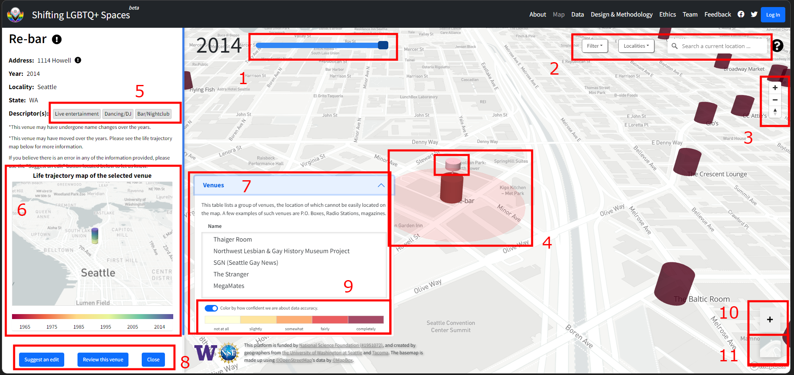

Project Overview
Shifting LGBTQ+ Spaces is an effort by a team of faculty and students at the University of Washington to build and eventually analyze a nationwide data base of LGBTQ+ spaces and places in the U.S.from the mid-1960s through the mid-2010s. The data base is meant to be expandable to the present but for the moment is focused on the time period indicated. Our project is funded by the National Science Foundation (Grant #1951072) with support from the UW Center for Studies in Demography & Ecology, the UW Department of Geography, the UW Humanistic GIS Laboratory, and the University of Washington Tacoma. We invite contributions and corrections to the data from visitors to this site (see instructions below) and welcome other kinds of feedback as well. Feel free to use the tools we offer here or you can contact us directly at xxxx@uw.edu.
How to use this platform
This geospatial platform allows visitors to: i) view the locations of LGBTQ+ venues certain U.S. cities, between 1965-2014; ii)offer additions or corrections to the data, and iii) download data. Below, we will introduce each of three major functions one by one.
This platform features a map* showing venues in our database.
1. At the top-left is a “time slider” (for choosing the year you want to look at).
2. At the top-right are a “Filter” button (for viewing types or characteristics of venues), a “Localities” button (for choosing the city you want to view”), and a locality “Search” button.**
3. Just below the top-right tool bar, a set of plus and minus buttons let you zoom in or zoom out on the map, the compass button below reorients the map to face north.
4. Venues are represented by cones on the map, clicking on one would open up the left side info panel
5. Clicking one of the descriptors in this area sets the current filter to that descriptor
6. In the middle of the info panel is a life trajectory map of the current venue. This map shows where the venue is located at any point in time.
7. Clicking on the icons here will redirect to google street view, google photos and twitter respectively. This is an experimental feature
8. At the bottom of the profile you may suggest an edit if you believe there's inaccuracy in the information, share a review of the venue, or close the info panel.
9. Clicking on this bar opens up a table of venues that are either difficult to locate or do not have an associated physical address. Selecting any venue from the list will display their respective info panel on the left.
10. The large plus button is for suggesting missing venues. If you know of a venue that is not currently on the map, please fill out the form and help us find it!
11. You can switch the “base map” to a current satellite image by hovering over the map below the “+” sign on the bottom-right and clicking on the satellite image button.
**Please note that currently we only have data uploaded for four U.S. cities (Atlanta, Cleveland, Nashville, and Seattle). We will add more cities over time.
You can currently make two types of contributions to this database: adding a missing venue or suggesting an edit to an existing venue. To protect your privacy, we are NOT asking you to login to the portal in a way that results in any personal information about you being collected. Instead, you will need to log in to the platform using a temporary passphrase. If you do not already have a passphrase, click here to obtain one. Once you have a passphrase, click the log in button at the top-right of the map. A login panel will pop up. Then simply input the three terms of the passphrase and click “log in”. A notice will appear indicating that you have successfully logged in. If the login fails, please try again or contact us for help at XXX@uw.edu.
To add a missing venue, click the “+” button at the bottom-right of the main map. A panel will then open where you can make your contribution. To suggest an edit to an existing venue, click on the cone representing the venue on the map. A panel will again open where you can suggest an edit. Just click on the “Suggest an edit” button at the bottom of the panel. Click the “Submit” button when you are done. Please note that your contribution will not immediately appear on the map, as it takes time to process contributions.
Our data can be downloaded free of charge but we ask that you agree to certain terms regarding how you use the data. See our data page for more information.
Acknowledgement
Our project is funded by the National Science Foundation (Grant #1951072) with support from the UW Center for Studies in Demography & Ecology, the UW Department of Geography, the UW Humanistic GIS Laboratory, and the University of Washington Tacoma.